¿De qué fecha data cada paradigma?
¿Cuál diríais que es el más antiguo?
¿De qué fecha data cada paradigma?
class Empleado { private int dni; Empleado (String dni) throws NumberFormatException { this.dni = new Integer(dni).intValue(); } int getDni() { return dni; } public String toString() { return new Integer(dni).toString(); } public int compareTo(Empleado otro) { return this.dni - otro.getDni(); } public boolean equals(Empleado otro) { return dni==otro.getDni(); } }
class Empleado { private String nif; Empleado (String nif) { this.nif = nif } String getNif() { return id; } public String toString() { return nif; } public int compareTo(Empleado otro) { return nif.compareTo(otro.getNif()); } public boolean equals(Empleado otro) { return nif.equals(otro.getId()); } }
Manejo de identificadores de forma independiente de la
implementación del objeto identificado.
Cambio fácil de implementación de los identificadores (int,
String, etc.) hacia cualquier tipo básico o clase primitiva,
sencilla o compuesta.
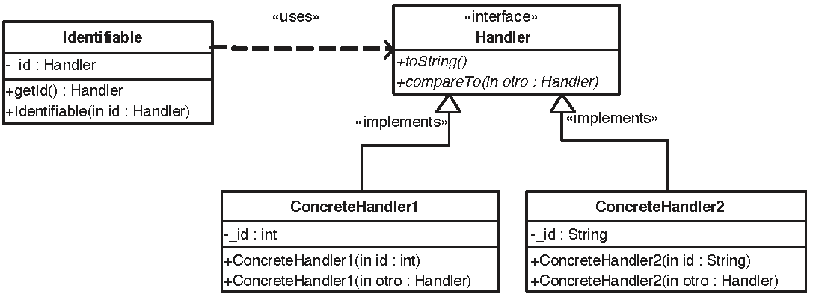
Identifiable: Clase cliente que necesita identificar a sus objetos a través de algún atributo identificador
Handler: Interfaz para declarar los identificadores de los objetos de la clase Identifiable
ConcreteHandler: Implementación concreta de la interfaz Handler
interface Handler{ String toString(); int compareTo(Handler otro); } class IdentificadorNumerico implements Handler { private int id; IdentificadorNumerico (String id) throws NumberFormatException { this.id = new Integer(id).intValue(); } public String toString() { return new Integer(id).toString(); } public int compareTo(Handler otro) { return toString().compareTo(otro.toString()); } }
java.lang.ComparableImplementar un identificador utilizando java.lang.Comparable del JDK.
Comparable es una interfaz implementada por String, File, Date, etc. y todas las llamadas clases de envoltura del JDK (i.e. Integer, Long, etc.)
Métodos de la interfaz:
public int compareTo(Object o) throws ClassCastException
Invariantes:
sgn(x.compareTo(y)) = -sgn(y.compareTo(x))
(x.compareTo(y)>0 and y.compareTo(z)>0) x.compareTo(z)>0
x.compareTo(y)=0 sgn(x.compareTo(z))=sgn(y.compareTo(z)) z
Consistencia con equals:
(x.compareTo(y)=0) (x.equals(y))
Saludo.java?Incluir un método main que pruebe la funcionalidad de la clase:
class Saludo { /** * Imprime "Hola Mundo!" */ void saludar() { System.out.println("Hola Mundo!"); } /** * Imprime un mensaje */ void saludar(String mensaje) { System.out.println(mensaje); } /** * Tests */ public static void main( String[] args ) { Saludo saludo1 = new Saludo(); saludo1.saludar(); Saludo saludo2 = new Saludo("Hola caracola!"); saludo2.saludar(); } }
Cuanto más grande sea la interfaz de la clase, mayor será el main
El tamaño del código de la clase crece por las pruebas
Poco fiable, porque main forma parte de la misma clase y tiene acceso a los elementos privados
Difícil de automatizar las pruebas, incluso pasando argumentos a main
import org.junit.*; import static org.junit.Assert.*; public class SaludoTest { public static void main(String args[]) { junit.textui.TestRunner.run(SaludoTest.class); } @Test public void saludar() { Saludo hola = new Saludo(); assert( hola!=null ); assertEquals("Hola Mundo!", hola.saludar() ); } }
Ejecución de los tests:
import org.junit.runner.JUnitCore; import org.junit.runner.Result; import org.junit.runner.notification.Failure; public class MyTestRunner { public static void main(String[] args) { Result result = JUnitCore.runClasses(SaludoTest.class); for (Failure failure : result.getFailures()) { System.out.println(failure.toString()); } } }
¿De qué están hechas las anotaciones como @Test?
Veamos una versión anterior de jUnit, que expone más claramente las tripas del framework
import junit.framework.TestCase; import junit.framework.Assert; public class SaludoTest extends TestCase { public SaludoTest(String nombre) { super(nombre); } public void testSaludar() { Saludo hola = new Saludo(); assert( hola!=null ); assertEquals("Hola Mundo!", hola.saludar() ); } }
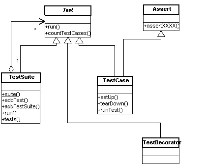
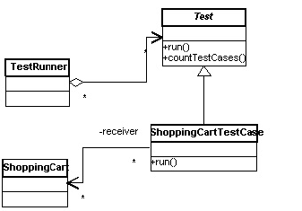
Diseño de una aplicación de comercio electrónico:
ShoppingCart - carrito de la compraCreditCard - tarjeta de créditoProduct- artículosDiseño de pruebas unitarias de ShoppingCart para:
public class ShoppingCart { private ArrayList items; public ShoppingCart() { ... } public double getBalance() { ... } public void addItem(Product p) { ... } public void removeItem(Product p) throws ProductNotFoundException { ... } public int getItemCount() { ... } public void empty() { ... } public boolean isEmpty() { ... } }
import junit.framework.TestCase; import junit.framework.TestSuite; import junit.framework.Assert; public class ShoppingCartTest extends TestCase { private ShoppingCart bookCart; private Product defaultBook; //... protected void setUp() { bookCart = new ShoppingCart(); defaultBook = new Product("Extreme Programming", 23.95); bookCart.addItem(defaultBook); } protected void tearDown() { bookCart = null; } public void testEmpty() { bookCart.empty(); assertTrue(bookCart.isEmpty()); } public void testProductAdd() { Product book = new Product("Refactoring", 53.95); bookCart.addItem(book); double expectedBalance = defaultBook.getPrice() + book.getPrice(); assertEquals(expectedBalance, bookCart.getBalance(), 0.0); assertEquals(2, bookCart.getItemCount()); } public void testProductRemove() throws ProductNotFoundException { bookCart.removeItem(defaultBook); assertEquals(0, bookCart.getItemCount()); assertEquals(0.0, bookCart.getBalance(), 0.0); } public void testProductNotFound() { try { Product book = new Product("Ender's Game", 4.95); bookCart.removeItem(book); fail("Should raise a ProductNotFoundException"); } catch(ProductNotFoundException success) { ... } } public static Test suite() { // Use reflection to add all testXXX() methods TestSuite suite = new TestSuite(ShoppingCartTest.class); // Alternatively, but prone to error when adding more // test case methods... // TestSuite suite = new TestSuite(); // suite.addTest(new ShoppingCartTest("testProductAdd")); // suite.addTest(new ShoppingCartTest("testEmpty")); // suite.addTest(new ShoppingCartTest("testProductRemove")); // suite.addTest(new ShoppingCartTestCase("testProductNotFound")); return suite; } }
Ahora agrupamos varios casos de prueba en una misma suite:
import junit.framework.Test; import junit.framework.TestSuite; import org.junit.runner.JUnitCore; import org.junit.runner.Result; import org.junit.runner.notification.Failure; public class EcommerceTestSuite extends TestSuite { //... public static Test suite() { TestSuite suite = new TestSuite(); suite.addTest(ShoppingCartTest.suite()); return suite; } } public class MyTestRunner { public static void main(String[] args) { Result result = JUnitCore.runClasses(EcommerceTestSuite.class); for (Failure failure : result.getFailures()) { System.out.println(failure.toString()); } } }
import static org.junit.Assert.assertEquals; import static org.junit.Assert.fail; import org.junit.After; import org.junit.Before; import org.junit.Test; public class ShoppingCartTest { private ShoppingCart bookCart; private Product defaultBook; //... @Before protected void setUp() { bookCart = new ShoppingCart(); defaultBook = new Product("Extreme Programming", 23.95); bookCart.addItem(defaultBook); } @After protected void tearDown() { bookCart = null; } @Test public void testEmpty() { bookCart.empty(); assertTrue(bookCart.isEmpty()); } @Test public void testProductAdd() { Product book = new Product("Refactoring", 53.95); bookCart.addItem(book); double expectedBalance = defaultBook.getPrice() + book.getPrice(); assertEquals(expectedBalance, bookCart.getBalance(), 0.0); assertEquals(2, bookCart.getItemCount()); } @Test public void testProductRemove() { bookCart.removeItem(defaultBook); assertEquals(0, bookCart.getItemCount()); assertEquals(0.0, bookCart.getBalance(), 0.0); } @Test(expected = ProductNotFoundException.class) public void testProductNotFound() { Product book = new Product("Ender's Game", 4.95); bookCart.removeItem(book); fail("Should raise a ProductNotFoundException"); } }
public class EcommerceTestSuite extends TestSuite { //... public static Test suite() { TestSuite suite = new TestSuite(); suite.addTest(ShoppingCartTest.suite()); suite.addTest(CreditCardTest.suite()); // etc. return suite; } }
@RunWith(Suite.class) @SuiteClasses({ ShoppingCartTest.class, CreditCardTest.class }) public class EcommerceTestSuite { //... }
Diseñar y codificar una suite de casos de prueba unitaria para CreditCard usando jUnit 4.
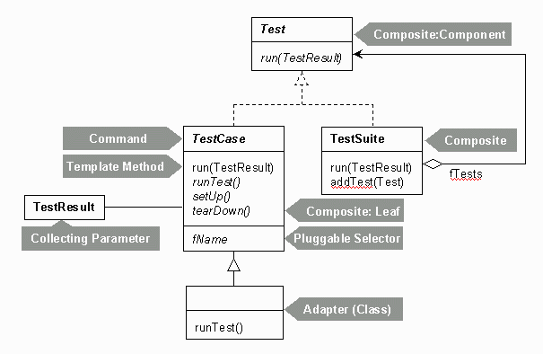
En la arquitectura del framework se observan diversos patrones: Composite, Command, Adapter, Factory, Decorator, etc.
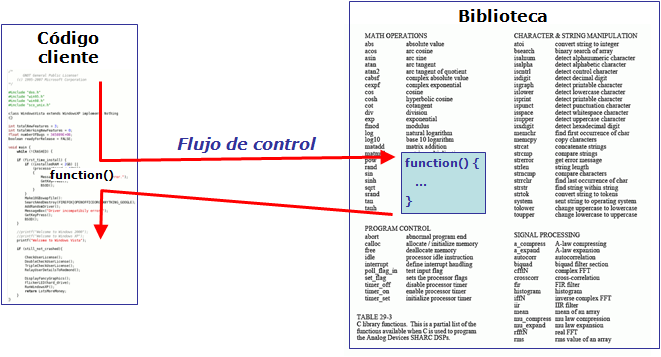
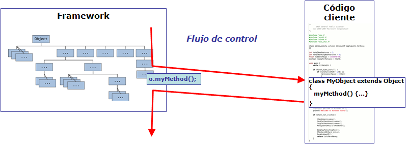
Colección de clases e interfaces que cooperan para formar un diseño reutilizable de un tipo específico de software
Abstracción
Máxima cohesión, mínimo acoplamiento
Inyección de dependencias: una clase o módulo no debería configurar sus dependencias estáticamente, sino ser configurada desde fuera
Tomado de Spring in Action
Añadir pruebas unitarias a la solución siguiente:
public class KnightOfTheRoundTable { private String name; private HolyGrailQuest quest; public KnightOfTheRoundTable(String name) { this.name = name; quest = new HolyGrailQuest(); } public HolyGrail embarkOnQuest() throws GrailNotFoundException { return quest.embark(); } } public class HolyGrailQuest { public HolyGrailQuest() {} public HolyGrail embark() throws GrailNotFoundException { HolyGrail grail = null; // Look for grail ... return grail; } }
¿Dónde está el acoplamiento?
import junit.framework.TestCase; public class KnightOfTheRoundTableTest extends TestCase { public void testEmbarkOnQuest() throws GrailNotFoundException { KnightOfTheRoundTable knight = new KnightOfTheRoundTable("CruzadoMagico"); HolyGrail grail = knight.embarkOnQuest(); assertNotNull(grail); assertTrue(grail.isHoly()); } }
Instanciación de HolyGrail
Cada vez que se prueba KnightOfTheRoundTable, también se prueba HolyGrailQuest.
No se puede pedir a HolyGrailQuest que se comporte de otra forma (v.g. devolver null o elevar una excepción)
Ocultar la implementación detrás de una interfaz:
public interface Knight { Object embarkOnQuest() throws QuestFailedException; } public class KnightOfTheRoundTable implements Knight { private String name; private Quest quest; public KnightOfTheRoundTable(String name) { this.name = name; quest = new HolyGrailQuest(); } public Object embarkOnQuest() throws QuestFailedException { return quest.embark(); } } public interface Quest { abstract Object embark() throws QuestFailedException; } public class HolyGrailQuest implements Quest { public HolyGrailQuest() {} public Object embark() throws QuestFailedException { // Do whatever it means to embark on a quest return new HolyGrail(); } }
Knight aún recibe un tipo específico de Questpublic class KnightOfTheRoundTable implements Knight { private String name; private Quest quest; public KnightOfTheRoundTable(String name) { this.name = name; } public Object embarkOnQuest() throws QuestFailedException { return quest.embark(); } public void setQuest(Quest quest) { this.quest = quest; } }
El caballero sólo sabe del desafío a través de su interfaz Quest.
Puede asignársele cualquier implementación de Quest
(HolyGrailQuest, RescueDamselQuest, etc.)
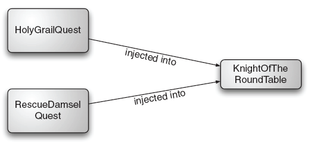
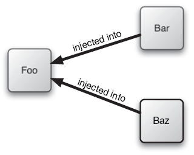
The question is: "what aspect of control are they inverting?" [...] Early user interfaces were controlled by the application program. You would have a sequence of commands like "Enter name", "enter address"; your program would drive the prompts and pick up a response to each one. With graphical (or even screen based) UIs the UI framework would contain this main loop and your program instead provided event handlers for the various fields on the screen. The main control of the program was inverted, moved away from you to the framework
Martin Fowler, http://martinfowler.com/articles/injection.html
Una factoría proporciona un mecanismo de inyección de dependencias, visto desde el lado opuesto (los clientes adquieren las dependencias, no se les inyecta)
Ejemplo: Spring FactoryBean
We most likely would have been better off not attempting to create a reusable function in the first place
-- Roger Sessions, The Misuse of Reuse [1]
[1] http://simplearchitectures.blogspot.com.es/2012/07/misuse-of-reuse.html
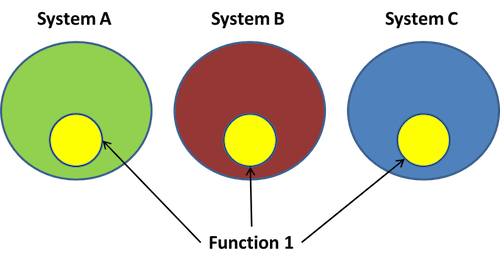
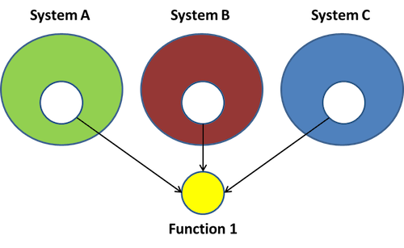
Ahorro:
Si sistemas € ahorro = €
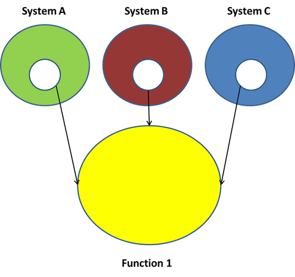
No crear funciones reutilizables en primer lugar
Aplicar el principio YAGNI: You Ain't Gonna Need It
El cliente (Paco) quiere:
Mantener un inventario de guitarras
Encontrar guitarras para sus clientes
Problemas de la aplicación heredada:
Caso de uso: un cliente busca una guitarra flamenca ‘Valeriano Bernal’, pero no encuentra ninguna
¿Problemas?
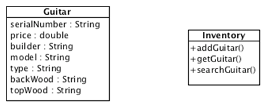
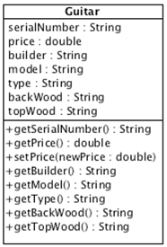
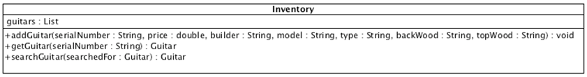
public class Guitar { private String serialNumber, builder, model, type, backWood, topWood; private double price; public Guitar(String serialNumber, double price, String builder, String model, String type, String backWood, String topWood) { this.serialNumber = serialNumber; this.price = price; this.builder = builder; this.model = model; this.type = type; this.backWood = backWood; this.topWood = topWood; } public String getSerialNumber() {return serialNumber;} public double getPrice() {return price;} public void setPrice(float newPrice) { this.price = newPrice; } public String getBuilder() {return builder;} public String getModel() {return model;} public String getType() {return type;} public String getBackWood() {return backWood;} public String getTopWood() {return topWood;} }
public class Inventory { private List guitars; public Inventory() { guitars = new LinkedList(); } public void addGuitar(String serialNumber, double price, String builder, String model, String type, String backWood, String topWood) { Guitar guitar = new Guitar(serialNumber, price, builder, model, type, backWood, topWood); guitars.add(guitar); } public Guitar getGuitar(String serialNumber) { for (Iterator i = guitars.iterator(); i.hasNext(); ) { Guitar guitar = (Guitar)i.next(); if (guitar.getSerialNumber().equals(serialNumber)) { return guitar; } } return null; } public Guitar search(Guitar searchGuitar) { for (Iterator i = guitars.iterator(); i.hasNext(); ) { Guitar guitar = (Guitar)i.next(); String builder = searchGuitar.getBuilder().toLowerCase(); if ((builder != null) && (!builder.equals("")) && (!builder.equals(guitar.getBuilder().toLowerCase()))) continue; String model = searchGuitar.getModel().toLowerCase(); if ((model != null) && (!model.equals("")) && (!model.equals(guitar.getModel().toLowerCase()))) continue; String type = searchGuitar.getType().toLowerCase(); if ((type != null) && (!searchGuitar.equals("")) && (!type.equals(guitar.getType().toLowerCase()))) continue; String backWood = searchGuitar.getBackWood().toLowerCase(); if ((backWood != null) && (!backWood.equals("")) && (!backWood.equals(guitar.getBackWood().toLowerCase()))) continue; String topWood = searchGuitar.getTopWood().toLowerCase(); if ((topWood != null) && (!topWood.equals("")) && (!topWood.equals(guitar.getTopWood().toLowerCase()))) continue; return guitar; } return null; } }
Se compara el fabricante sin tener en cuenta mayúsculas/minúsculas
Se comparan todos los campos sin tener en cuenta
mayúsculas/minúsculas
No hay definidas constantes para cada fabricante
¿Estas soluciones abordan el verdadero problema?
Preguntar a Paco...
Preguntemos a Paco, que no tiene por qué saber nada de objetos ni bases
de datos:
¿Sólo vendes guitarras?
¿Cómo actualizas el inventario?
¿Cómo funciona la búsqueda de guitarras?
¿Necesitarás informes de inventario y de ventas?
Paco dice que:
Los clientes no siempre conocen las características exactas de la guitarra que quieren
Los clientes suelen buscar guitarras dentro de un rango de precios
Suele haber más de una guitarra que casa con las necesidades del cliente
Sí, necesito informes y demás, pero ¡la prioridad nº 1 es encontrar las guitarras!
Hacer refactoring de la aplicación heredada de Guitarras Paco
SRP: Single responsibility Principle
A class should have onlye one reason to change
-- Uncle Bob Martin
SRP es lo mismo que el principio de cohesión de DeMarco
Shape?package shapes; interface Shape { double area(); void draw(); } class Point { double getX() {...} double getY() {...} } abstract class Polygon implements Shape { Point getVertex(index i) {...} void draw() {...} String toString() {...} } class Triangle extends Polygon { double area() {...} } abstract class RectParallelogram extends Polygon { double area() {...} } class Square extends RectParallelogram {...} class Rectangle extends RectParallelogram {...} abstract class ClosedCurve implements Shape {...} class Circle extends ClosedCurve { double getRadius() {...} Point getCenter() {...} double area() {...} void draw() {...} String toString() {...} } class Ellipse extends ClosedCurve { double getApogeeRadius() {...} double getPerigeeRadius() {...} Point getFocus1() {...} Point getFocus2() {...} Point getCenter() {...} double area() {...} void draw() {...} String toString() {...} }
draw y toString (dibujar en pantalla) además del método area que calcula el área (geometría computacional) Violación del SRPPatrones de diseño: visitor
OCP: Open-Closed Principle
Toda clase, módulo, aspecto o función debe quedar abierto para extensiones pero cerrado para modificaciones
B. Meyer, Object Oriented Software Construction
¿Qué parte no cumple OCP en el ejemplo?
enum ShapeType {circle, square}; struct Shape { ShapeType itsType; }; struct Circle { ShapeType itsType; double itsRadius; Point itsCenter; }; void DrawCircle(struct Circle*); struct Square { ShapeType itsType; double itsSide; Point itsTopLeft; }; void DrawSquare(struct Square*); typedef struct Shape *ShapePointer; void DrawAllShapes(ShapePointer list[], int n) { int i; for (i=0; i<n; i++) { struct Shape* s = list[i]; switch (s->itsType) { case square: DrawSquare((struct Square*)s); break; case circle: DrawCircle((struct Circle*)s); break; } } }
DrawAllShapes no está cerrado para modificaciones cuando aparecen nuevos tipos de ShapeAplicando el OCP...
public interface Shape { void Draw(); } public class Square: Shape { public void Draw() { //draw a square } } public class Circle: Shape { public void Draw() { //draw a circle } } public void DrawAllShapes(IList shapes) { foreach(Shape shape in shapes) shape.Draw(); }
DrawAllShapes, solo tenemos que añadir una nueva clase derivada de ShapeIn general, no matter how closed a module is, there will always be some kind of change against which it is not closed. There is no model that is natural to all contexts!
Since closure cannot be complete, it must be strategic. That is, the designer must choose the kinds of changes against which to close the design, must guess at the kinds of changes that are most likely, and then construct abstractions to protect against those changes.
-- Bob C. Martin
ISP: Interface Segregation Principle
Los clientes no deben depender de métodos que no usan.
Bob C. Martin
Una implementación de puertas de seguridad con temporizador (TimedDoor) que hace sonar una alarma cuando la puerta está abierta durante un cierto tiempo.
TimedDoor se comunica con Timer para registrar un temporizador
Cuando salta el temporizador, avisa a un TimerClient
Con la siguiente solución, un TimerClient puede registrarse a sí mismo en un Timer y recibir un mensaje Timeout().
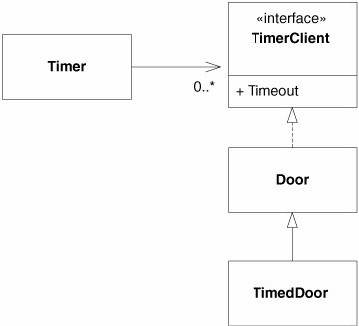
public class Timer { public void Register(int timeout, TimerClient client) { /*code*/ } } public interface TimerClient { void TimeOut(); }
Timeout() de TimedDoor y no debería.public class Timer { public void Register(int timeout, int timeOutId, TimerClient client) { /*code*/ } } public interface TimerClient { void TimeOut(int timeOutID); }
¿En qué ha afectado el cambio en la implementación de TimerClient?
TimerClient, pero también a Door y a los clientes de Door (y no debería)Door depende de TimerClient y no todas las variedades de puerta son de seguridad (con temporizador)TimeoutDelegación a través del patrón adapter (de objetos o de clases)
Versión adaptador de clases (por herencia):
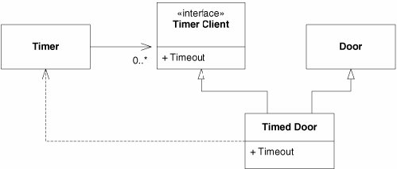
Versión adaptador de objetos (por composición):
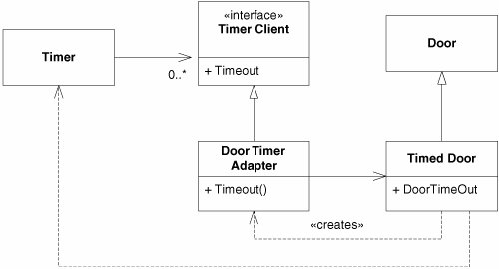
package shapes; interface Shape { double area(); void draw(); } class Point { double getX() {...} double getY() {...} } abstract class Polygon implements Shape { Point getVertex(index i) {...} void draw() {...} String toString() {...} } class Triangle extends Polygon { double area() {...} } abstract class RectParallelogram extends Polygon { double area() {...} } class Square extends RectParallelogram {...} class Rectangle extends RectParallelogram {...} abstract class ClosedCurve implements Shape {...} class Circle extends ClosedCurve { double getRadius() {...} Point getCenter() {...} double area() {...} void draw() {...} String toString() {...} } class Ellipse extends ClosedCurve { double getApogeeRadius() {...} double getPerigeeRadius() {...} Point getFocus1() {...} Point getFocus2() {...} Point getCenter() {...} double area() {...} void draw() {...} String toString() {...} }
draw) y para imprimir (toString) pueden descohesionar las clases y atentar contra OCP y SRP.// Ficheros <X>ToString.aj (uno por aspecto) package shapes.tostring; // para todos los toString() aspect PolygonToString { String Polygon.toString() { StringBuffer buff = new StringBuffer(); buff.append(getClass().getName()); //... añadir nombre y área... //... añadir cada línea desde un vértice al siguiente return buff.toString(); } } aspect CircleToString { String Circle.toString() {...} } aspect EllipseToString { String Ellipse.toString() {...} } // Drawable.java package drawing; interface Drawable { void draw(); } // Ficheros Drawable<X>.aj package shapes.drawing; // para todos los draw()... import drawing.Drawable; abstract aspect DrawableShape { declare parents: Shape implements Drawable; void Shape.draw () //template method { String drawCommand = makeDrawCommand(); // enviar orden al motor gráfico... } String Shape.makeDrawCommand() { return getClass().getName() + "\n" + makeDetails("\t"); } abstract String Shape.makeDetails (String indent); } aspect DrawablePolygon extends DrawableShape { String Polygon.makeDetails (String indent){...} } aspect DrawableCircle extends DrawableShape { String Circle.makeDetails (String indent){...} } aspect DrawableEllipse extends DrawableShape { String Ellipse. makeDetails (String indent){...} }
LSP: Liskov Substitution Principle
Un subtipo debe poder ser sustituible por sus tipos base
Barbara Liskov,
Si una función depende de una clase base y hay una derivada de , las instancias de no deben alterar el comportamiento definido por de modo que deje de funcionar
struct Point {double x, y;} public enum ShapeType {square, circle}; public class Shape { private ShapeType type; public Shape(ShapeType t){type = t;} public static void DrawShape(Shape s) { if(s.type == ShapeType.square) (s as Square).Draw(); else if(s.type == ShapeType.circle) (s as Circle).Draw(); } } public class Circle: Shape { private Point center; private double radius; public Circle(): base(ShapeType.circle) {} public void Draw() {/* draws the circle */} } public class Square: Shape { private Point topLeft; private double side; public Square(): base(ShapeType.square) {} public void Draw() {/* draws the square */} }
DrawShape viola claramente el OCP
Además Square y Circle no son sustuibles por Shape: no redefinen ninguna función de Shape, sino que añaden Draw() (violación del LSP)
Esta violación de LSP es la que provoca la violación de OCP en DrawShape
Violación más sutil de LSP...
De momento solo necesitamos rectángulos y escribimos esta versión:
public class Rectangle { private Point topLeft; private double width; private double height; public double Width { get { return width; } set { width = value; } } public double Height { get { return height; } set { height = value; } } }
Un día hace falta manejar cuadrados además de rectángulos.
Geométricamente, un cuadrado es un rectángulo, así que hacemos uso de la herencia (relación es-un):
public class Square: Rectangle { ... }
Un cuadrado podría ser un rectángulo, pero definitivamente un objeto Square no es un objeto Rectangle
Un Square no tiene propiedades heighty width. Pero supongamos que no nos importa el desperdicio de memoria.
Square heredará los métodos accesores de Rectangle.
Así que hacemos lo siguiente...
public class Square: Rectangle { public new double Width { set { base.Width = value; base.Height = value; } } public new double Height { set { base.Height = value; base.Width = value; } } }
El comportamiento de un objeto Square no es consistente con el de un objeto Rectangle:
Square s = new Square(); s.SetWidth(1); // fija ambos s.SetHeight(2); // fija ambos void f(Rectangle r) { r.SetWidth(32); // calls Rectangle.SetWidth }
¿Qué sucede si pasamos un Square a la función f?
¡No cambia Height!
Podría argumentarse que el error era que los métodos Widthy Height no se declararon virtual en Rectangle.
new y override en un método en C# es que new oculta la implementación de la clase base y override la extiende.Sin embargo, cuando la creación de una clase derivada provoca cambios en la clase base, es síntoma de un mal diseño.
El LSP pone en evidencia que la relación es-un tiene que ver con el comportamiento público extrínseco, del que los clientes dependen.
public class Rectangle { private Point topLeft; private double width; private double height; public virtual double Width { get { return width; } set { width = value; } } public virtual double Height { get { return height; } set { height = value; } } } public class Square: Rectangle { public override double Width { set { base.Width = value; base.Height = value; } } public override double Height { set { base.Height = value; base.Width = value; } } }
Ahora parece que funcionan Square y Rectangle, que matemáticamente quedan bien definidos.
Pero consideremos esto:
void g(Rectangle r) { r.Width = 5; // cree que es un Rectangle r.Height = 4; // cree que es un Rectangle if(r.Area() != 20) throw new Exception("Bad area!"); }
¿Qué pasa si llamamos a g(new Square(3))?
El autor de g asumió que cambiar el ancho de un rectángulo deja intacto el alto. Si pasamos un cuadrado esto no es así
Violación de LSP: Si pasamos una instancia de una clase derivada (Square), se altera el comportamiento definido por la clase base (Rectangle) de forma que g deja de funcionar.
¿Quién tiene la culpa?
g por asumir que "en un rectángulo su ancho y alto son independientes" (invariante)?Square por violar el invariante?Rectangle y no de Square!Para evaluar si un diseño es apropiado, no se debe tener en cuenta la solución por sí sola, sino en términos de los supuestos razonables que hagan los usuarios del diseño.
Relación entre LSP y el Design-By-Contract (DBC) de Bertrand
Meyer:
A routine redeclaration [in a derivative] may only replace the original precondition by one equal or weaker, and the original post-condition by one equal or stronger
–– B. Meyer
Postcondición del setter de Rectangle.Width
(En C++ sería Rectangle::SetWidth(double w)):
assert((Width == w) && (Height == old.Height));
Postcondición del setter de Square.Witdh
En C++ sería Square::SetWidth(double w)):
assert(Width==w);
La postcondición de Square::SetWidth(double w) viola el contrato de la clase base porque es más débil que la de Rectangle
DIP: Dependency Inversion Principle
Los módulos de alto nivel no deben depender de módulos de bajo nivel.
Ambos deben depender de abstracciones.
Las abstracciones no deben depender de los detalles, sino los detalles de las abstracciones
Depend on abstractions
Robert C. Martin
Diseño inicial:
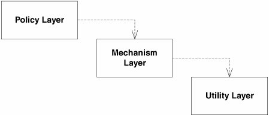
Diseño invertido:
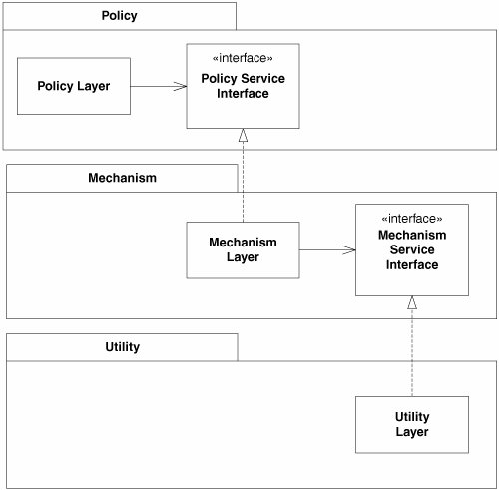
Hay que violar alguna vez estas heurísticas, pues alguien tiene que crear las instancias de las clases concretas. El módulo que lo haga presentará una dependencia de dichas clases concretas.
Gracias a la introspección o la carga dinámica de clases, los lenguajes de programación pueden indicar el nombre de la clase a instanciar (por ejemplo, en un fichero de configuración).
Hay clases concretas que no cambian, como string, así que no hace ningún daño depender de ellas.